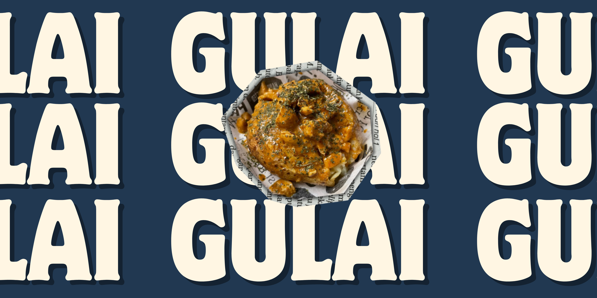
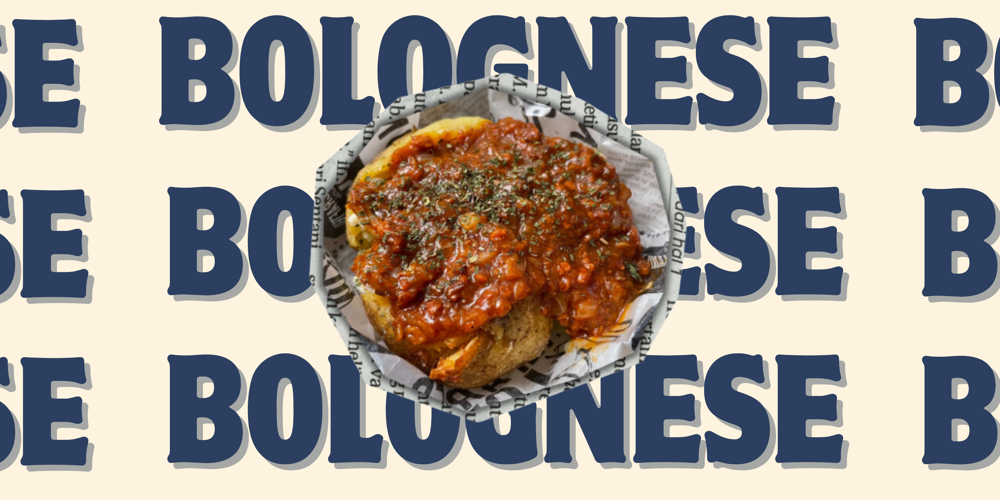
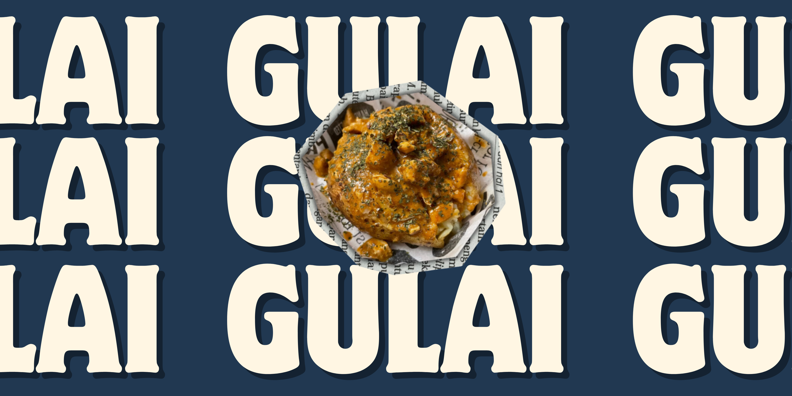
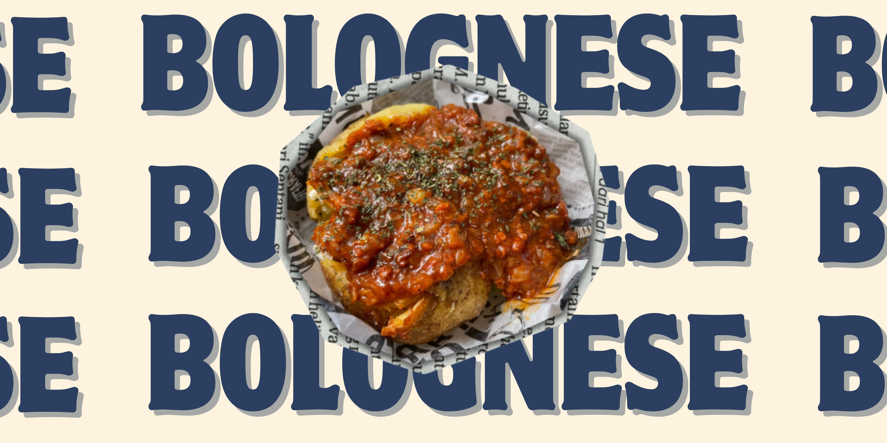

Hi Stanley, Welcome to Website
 



Profile
Rootato adalah brand kuliner lokal yang menghadirkan cita rasa unik dari baked potato atau kentang panggang. Kami mengolah kentang pilihan dengan teknik khusus agar menghasilkan tekstur yang lembut di dalam dan renyah di luar, dipadukan dengan beragam topping kekinian yang menggugah selera. Berawal dari kecintaan kami terhadap kentang dan kreativitas dalam kuliner, Rootato hadir sebagai solusi camilan sekaligus makanan berat yang praktis, lezat, dan bergizi. Cocok untuk dinikmati kapan saja—baik saat kumpul bareng teman, nugas, hingga jadi teman nonton favoritmu.
Rootato menawarkan berbagai varian baked potato dengan topping istimewa, mulai dari rasa klasik hingga varian spesial yang terus kami kembangkan. Beberapa menu andalan kami antara lain:
🧀 Cheesy Melt – Kentang panggang dengan lelehan keju creamy.
🥓 Smoky Beef – Kentang dengan topping daging asap dan saus BBQ.
🌶️ Spicy Tuna – Sentuhan pedas gurih dari tuna pedas ala Rootato.
🥦 Veggie Delight – Varian sehat dengan sayuran segar dan saus spesial.
🥔 Build Your Own Potato – Kreasikan kentangmu sendiri sesuai selera!
Kami percaya bahwa makanan enak bisa tetap sederhana, dan Rootato hadir untuk membuktikannya.
Local Wisdom
Rootato menghadirkan spud potato dengan bahan-bahan lokal berkualitas, seperti kentang dan topping khas Nusantara yang mencerminkan kearifan lokal.
Omiconnectivity
Pelanggan merasa kenyang dengan produk Rootato.
Virtue
Penggunaan bahan lokal seperti kentang, Rootato mendukung petani lokal dan mengurangi jejak karbon dari transportasi bahan impor
Ecological Harmony
Setiap topping terinspirasi dari cita rasa global, memperkuat koneksi antara budaya dan mendukung keberlanjutan.